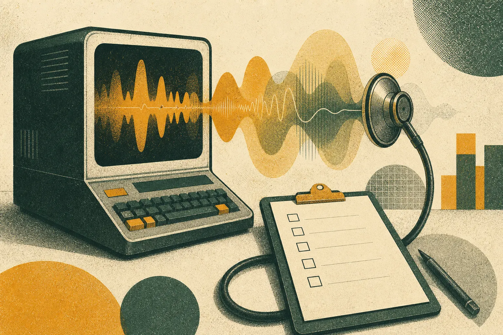

Cách đánh giá giọng điệu thương hiệu trong thời đại nội dung AI

Đánh giá giọng điệu thương hiệu đo lường mức độ khác biệt, nhất quán và phù hợp với khán giả của nội dung. Bạn thu thập các mẫu gần đây, so sánh với đối thủ, tìm các khuôn mẫu AI chung chung và so sánh vốn từ của mình với ngôn từ khán giả thực sự dùng. Kết quả là một danh sách điều cần sửa theo thứ tự ưu tiên, đưa thẳng vào hệ thống giọng điệu và thư viện prompt.
Vì sao nên đánh giá giọng điệu ngay lúc này?
Từ khi soạn nháp bằng AI trở thành việc thường ngày, nhiều thương hiệu đã trôi dạt mà không nhận ra. Từng bài riêng lẻ có vẻ ổn; gộp lại, chúng trượt dần về cùng một giọng trau chuốt, vô danh như đối thủ. Đánh giá giọng điệu giúp sự trôi dạt đó hiện rõ. Đây là việc đầu tiên chúng tôi làm trong hầu hết mọi dự án tại GPT3 Marketing, và là lý do lời kêu gọi hành động chính của chúng tôi là đặt lịch đánh giá.
Bước 1: cần thu thập những gì?
- Ba mươi đến năm mươi bài gần đây trên các kênh chính
- Ghi chú bài nào có AI hỗ trợ, nếu biết
- Bộ nguyên tắc thương hiệu hiện có
- Một bộ mẫu tương đương từ hai hoặc ba đối thủ
- Dữ liệu hiệu suất nếu có
Bước 2: kiểm tra độ khác biệt như thế nào?
Phép thử đổi logo
Thay tên thương hiệu của bạn bằng tên đối thủ trong từng bài. Đánh dấu mọi bài mà việc hoán đổi vẫn thấy tự nhiên. Tỷ lệ phần trăm đó là thước đo sơ bộ cho mức độ chung chung của nội dung.
Phép thử nhận diện mù
Trộn các bài của bạn với bài của đối thủ và xóa tên. Nhờ đồng nghiệp ngoài bộ phận marketing phân loại theo thương hiệu. Nếu họ không làm được, giọng điệu chưa làm tròn nhiệm vụ.
Thống kê khuôn mẫu
Đếm các câu mở đầu, cấu trúc danh sách, câu kết và từ ưa dùng lặp lại. Các khuôn mẫu máy móc lặp lại là dấu hiệu cho thấy mặc định của mô hình đã chiếm quyền. Chúng tôi liệt kê những khuôn mẫu phổ biến trong vì sao nội dung AI nghe giống hệt nhau.
Bước 3: ngôn từ của bạn so với khán giả ra sao?
Đây là bước hầu hết các cuộc đánh giá bỏ qua, và là bước quan trọng nhất. Hãy thu thập cách khán giả nói về vấn đề bạn giải quyết: các cụm từ, những nỗi bực bội, giọng điệu họ dùng với nhau. SOMIN, một nền tảng nghiên cứu khán giả bằng AI và là đối tác công nghệ của chúng tôi, làm điều này từ bài đăng mạng xã hội thực, giải mã sắc thái, cảm xúc và điểm căng thẳng. Các trang so sánh như SOMIN so với công cụ mạng xã hội giải thích điều này khác với việc theo dõi từ khóa đơn thuần như thế nào.
Sau đó đặt hai vốn từ cạnh nhau. Khi bạn nói "tối ưu hóa", họ có nói "thôi phí phạm" không? Khi bạn nói "cộng đồng", họ có nói "những người như tôi" không? Mỗi khoảng cách là một cơ hội để nghe giống một người mà họ sẵn lòng lắng nghe.
Bước 4: chấm điểm như thế nào?
Chấm mỗi bài từ một đến năm điểm theo bốn tiêu chí:
- Độ khác biệt: có phải chỉ chúng ta mới viết được bài này không?
- Tính nhất quán: nó có khớp với các nội dung khác của chúng ta không?
- Độ phù hợp với khán giả: nó có dùng ngôn từ của họ và nói đến điểm căng thẳng của họ không?
- Độ rõ ràng: ý chính có hiện rõ trong vòng hai câu không?
Điểm trung bình theo kênh cho thấy giọng điệu mạnh nhất ở đâu và trượt dốc ở đâu. Đối chiếu với dữ liệu hiệu suất để xem độ phù hợp với khán giả cao hơn có đi kèm tương tác tốt hơn trong chính số liệu của bạn hay không.
Bước 5: làm gì với kết quả?
- Sửa nhanh: cụm từ bị cấm, quy tắc mở đầu, danh sách từ vựng được làm mới.
- Sửa cấu trúc: một hệ thống giọng điệu mới hoặc được chỉnh sửa, kèm ví dụ minh họa.
- Sửa quy trình: mẫu brief mang bằng chứng khán giả, và nhật ký biên tập.
Một cuộc đánh giá chỉ hữu ích nếu nó thay đổi những gì được đưa vào brief tiếp theo.
Danh sách kiểm tra: đánh giá giọng điệu
- Mẫu gồm 30 đến 50 bài, cùng mẫu của đối thủ
- Đã hoàn thành phép thử đổi logo, nhận diện mù và thống kê khuôn mẫu
- Vốn từ của khán giả được thu thập từ cuộc trò chuyện thực
- Các bài được chấm điểm theo bốn tiêu chí
- Kết quả được phân loại thành sửa nhanh, sửa cấu trúc và sửa quy trình
- Người phụ trách và thời hạn cho từng điểm cần sửa
Định nghĩa
- Trôi dạt giọng điệu: sự dịch chuyển dần dần của văn phong thương hiệu khỏi giọng điệu mong muốn.
- Độ khác biệt: mức độ nội dung có thể được nhận ra là của một thương hiệu.
- Độ phù hợp với khán giả: mức độ nội dung phản ánh ngôn từ và mối bận tâm của khán giả.
Ví dụ minh họa
Hãy hình dung một thương hiệu dịch vụ tài chính đánh giá bốn mươi bài đăng. Phép thử đổi logo áp dụng được với hầu hết các bài. Thống kê khuôn mẫu phát hiện cùng một kiểu mở đầu bằng câu hỏi ở một phần ba số bài. Nghiên cứu khán giả cho thấy khách hàng nói về tiền bạc với sự lo âu và hài hước khô khan, trong khi thương hiệu viết với vẻ vui vẻ không ngừng. Cách sửa: cấm kiểu mở đầu đó, thêm hai ví dụ thừa nhận nỗi lo một cách thẳng thắn, và cập nhật mẫu brief với các cụm từ hiện tại của khán giả. Nội dung tháng tiếp theo đọc như của một thương hiệu khác, đáng tin cậy hơn.
Để có góc nhìn rộng hơn về cách hiểu biết khán giả định hình công việc thương hiệu, case study Reassured là tài liệu đọc thêm hữu ích. Nếu sắc thái văn hóa quan trọng ở thị trường của bạn, đơn vị tư vấn chị em của chúng tôi Mindfuse chuyên về tâm lý người tiêu dùng Singapore và Đông Nam Á.
Ai nên tham gia?
Đánh giá giọng điệu hiệu quả nhất với một nhóm nhỏ: người phụ trách giọng điệu thương hiệu, một hoặc hai biên tập viên xử lý nội dung hằng ngày, một người gần gũi với khách hàng như trưởng nhóm cộng đồng hoặc hỗ trợ khách hàng, và người quản lý công cụ AI và prompt. Trưởng nhóm hỗ trợ khách hàng thường là người đóng góp giá trị nhất, vì họ nghe ngôn từ của khán giả mỗi ngày và nhanh chóng nhận ra khi câu chữ của thương hiệu không khớp.
Hãy cập nhật cho ban lãnh đạo nhưng đừng để họ ngồi trong phòng khi chấm điểm. Ý kiến của cấp trên thường neo cả nhóm, trong khi cuộc đánh giá nhằm làm rõ điều bằng chứng nói chứ không phải điều ai đó thích.
Sau khi đánh giá thì sao?
Đặt một mốc ba tháng sau để lặp lại một phiên bản nhẹ hơn: phép thử đổi logo và thống kê khuôn mẫu trên nội dung mới. Nếu các điểm sửa có hiệu quả, điểm độ khác biệt sẽ tăng và các khuôn mẫu lặp lại sẽ giảm. Nếu không, vấn đề thường nằm ở mẫu brief chứ không phải ở quy tắc giọng điệu.
Hầu hết các đội thấy lần đánh giá thứ hai nhanh hơn và khích lệ hơn lần đầu, vì các phép thử đã quen thuộc và sự cải thiện hiện rõ.
Câu hỏi thường gặp
Đánh giá giọng điệu thương hiệu là gì?
Là một cuộc rà soát có cấu trúc nội dung của thương hiệu để đo mức độ khác biệt và nhất quán của giọng điệu, so sánh với đối thủ và mức độ khớp với ngôn từ của khán giả.
Cần bao nhiêu nội dung cho một cuộc đánh giá giọng điệu?
Khoảng ba mươi đến năm mươi bài gần đây trên các kênh chính thường đủ để thấy các khuôn mẫu, cùng một bộ mẫu tương tự từ hai hoặc ba đối thủ.
Đánh giá giọng điệu mất bao lâu?
Một cuộc đánh giá tập trung có thể hoàn thành trong một đến hai tuần, tùy số lượng kênh và độ sâu của nghiên cứu khán giả.
Đặt lịch đánh giá giọng điệu
Chúng tôi viết cùng mô hình ngôn ngữ từ mùa hè API GPT-3 mở cửa năm 2020. Chúng tôi xây dựng hệ thống giọng điệu thương hiệu, thư viện prompt và vận hành nội dung có con người biên tập, dựa trên những gì khán giả thực của bạn phản hồi.
Gửi email tới ask@gpt3.marketing →